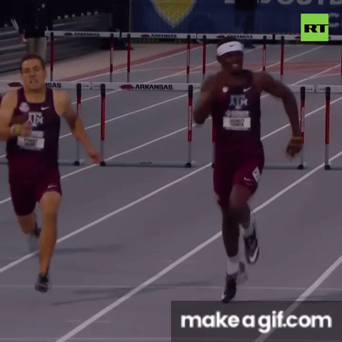
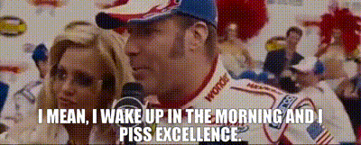
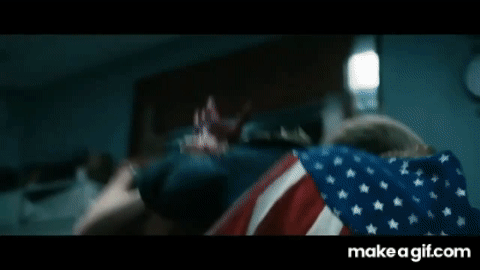
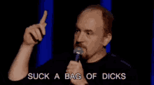
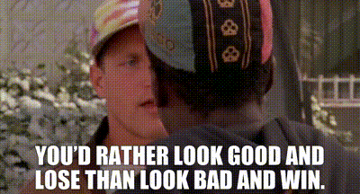

Published every Tuesday because Monday you're all still crying
Pulled from the league API: AFC and NFC divisions, in the order ESPN ranks them. Playoff odds aren't part of that feed, so they're off the board for now.
| Rk | AFC | Record | PF | PA | Streak | Moves |
|---|---|---|---|---|---|---|
| 1 | Nabers ate my Zombies | 5-1-0 | 1517.4 | 1317.3 | W4 | 9 |
| 2 | MaHOMELANDER | 3-3-0 | 1655.1 | 1557.0 | W1 | 1 |
| 3 | Covfefe is for Closers | 3-3-0 | 1561.3 | 1534.1 | L1 | 8 |
| 4 | Hurt Me Moore | 2-4-0 | 1473.3 | 1525.7 | L2 | 14 |
| 5 | Waddle On Deez Nuts | 2-4-0 | 1402.9 | 1444.2 | L2 | 2 |
| Rk | NFC | Record | PF | PA | Streak | Moves |
|---|---|---|---|---|---|---|
| 1 | Hellen Keller's Dodgeball Squad | 4-2-0 | 1388.5 | 1269.6 | W3 | 18 |
| 2 | Donuts All Day 24/7 | 3-3-0 | 1370.2 | 1312.4 | W2 | 2 |
| 3 | Kenz VishusLicks | 3-3-0 | 1364.7 | 1511.7 | L2 | 6 |
| 4 | Catchy Football Name | 3-3-0 | 1346.9 | 1365.8 | W2 | 2 |
| 5 | Texas Determined Domination | 2-4-0 | 1266.5 | 1509.2 | L3 | 7 |
JJ is 5-1 and has won four straight, and Ryan is 4-2 on a three-game streak. Five teams are 3-3 (MaHOMELANDER, Covfefe, Donuts, Kenz, and Catchy) and three are 2-4 (Hurt Me Moore, Waddle, and Texas Determined Domination). MaHOMELANDER still leads the league in points scored (1,655.1), has also allowed the most (1,557.0), and is back to .500 after a three-game losing streak. Hellen Keller's has made 18 waiver moves, the most in the league, and Kevin has made one.
The closest game was decided by 1.2 points and the biggest by 111.3, and both teams in the closest one missed their projections by about 40. Last week's preview leaned the right way in one of five games.
Projected: 244.5 – 242.2
Alby won by 1.2, the closest game of the week, and he got there by missing his projection by 40.25 while Lucas missed his by 39.15. Josh Allen scored 39.4 on a 46.45 projection, Jacoby Brissett scored 22.95 at OP on 34.14, Kyren Williams scored 16.2 on 29.52, and Ladd McConkey, listed questionable, scored 3.45 in a flex spot while Rashid Shaheed (15.05) sat on his bench. James Cook's 35.05 is what held it together. Lucas lost with 72.45 on his bench: Keenan Allen scored 20.95, Rachaad White scored 19.7, and Alvin Kamara scored 19.15, while Denzel Boston scored 4.25 at WR on a 16.82 projection with Allen sitting right there. Swap those two and Lucas wins by 15.5. The $5 Deshaun Watson scored 21.0 at OP on a 35.49 projection, and Dak Prescott (32.6), Bhayshul Tuten (31.2), and the Broncos D/ST (30.0) weren't enough to cover for him.

Projected: 212.7 – 234.3
JJ won by 38.65 after being projected 21.6 points behind. C.J. Stroud scored 47.65 at QB on a 33.66 projection, Aaron Rodgers scored 38.8 at OP, Malik Nabers scored 36.75 on 21.71, and DeVonta Smith scored 25.5. Roschon Johnson, a $1 claim on Saturday, scored 20.25 at RB on a 10.41 projection. Jahmyr Gibbs was on a bye and Cam Skattebo scored 0.0, so the lineup had holes, and JJ still scored 244.75. That's four straight wins and a 5-1 record. Kenz's top three of Kirk Cousins (40.35), Kenneth Walker III (38.4), and Matthew Stafford (33.55) scored 112.3, and the other eight starters scored 93.8, including Davante Adams (9.4), Harold Fannin Jr. (2.65), and the Texans D/ST (7.0). Marvin Harrison Jr., the $22 claim, scored 8.9 in a flex spot, which works out to about $2.47 a point. Tre Tucker, the player Kenz dropped to make room for him, scored 31.45 for Ryan. Jakobi Meyers scored 17.8 on his bench, and if he replaces Fannin, Kenz still loses by 23.5. This was an ugly game to watch; Ken needs to start shopping his talent to get a little bit more depth, especially after losing Davante for ~8 weeks (goodbye Achilles). Good work JJ, somehow your 'throw darts at a dartboard, and grab as many Giants players as possible' approach to drafting is paying off.

Projected: 279.1 – 183.5
Kevin won by 111.3, the biggest margin of the week, and ended his three-game losing streak by landing within 1.65 of his projection. Christian McCaffrey scored 40.2 on a 30.16 projection, Brock Purdy scored 35.2, Jonathan Taylor scored 31.35, and Matthew Golden scored 29.15 on 19.65. The Chiefs D/ST scored 28.0, and Patrick Mahomes scored 26.35 at OP on 37.49. His bench scored 78.05, the most in the league, and the Bears D/ST (24.5) was on it. Kolby ran out of players: Joe Burrow, Aaron Jones Sr., Jordan Addison, and Jaylen Wright were all on byes, Rashee Rice and Josh Jacobs scored 0.0 on his bench, and Keaton Mitchell scored 1.15 in a flex spot while Kyle Pitts Sr. scored 26.75 on the bench. That's the second week in a row Pitts has sat and scored (17.7 last week), 44.45 points left on the bench over two games. Make this week's swap and Kolby still loses by 85.7. Basically, Kevin got a layup, so don't break your arm patting yourself on the back.

Projected: 228.2 – 236.8
Sometimes it's better to be lucky than good, eh Ryan? This was the highest scoring game of the week, and somehow Ryan's squad pulled off the upset. At one point, the odds were solidly in Covfefe's favor, but the 49ers defense decided to shoot themselves in the collective foot and let Jayden Daniels (the one armed QB) drop dimes behind them in the second half. Ryan got the benefit of half of David's team being on IR or bye, but a wins a win.

Projected: 198.1 – 200.6
Let's be honest about what happened here, Joy's bye-pocalypse, coupled with Bijan being limited to backup level production doomed his squad. Somehow McCarty keeps getting lucky with matchups. Perhaps a trip to the casino is in order? Joy, set a reminder to manage your lineup bruh, you're better than this...

Matchups are set — projections and trash talk go here once we're closer to kickoff
Projected: [Catchy Football Name proj] – [MaHOMELANDER proj]
[Preview once Week 7 projections are available.]
Projected: [Waddle On Deez Nuts proj] – [Kenz VishusLicks proj]
[Preview once Week 7 projections are available.]
Projected: [Texas Determined Domination proj] – [Covfefe is for Closers proj]
[Preview once Week 7 projections are available.]
Projected: [Hurt Me Moore proj] – [Donuts All Day 24/7 proj]
[Preview once Week 7 projections are available.]
Projected: [Hellen Keller's Dodgeball Squad proj] – [Nabers ate my Zombies proj]
[Preview once Week 7 projections are available.]